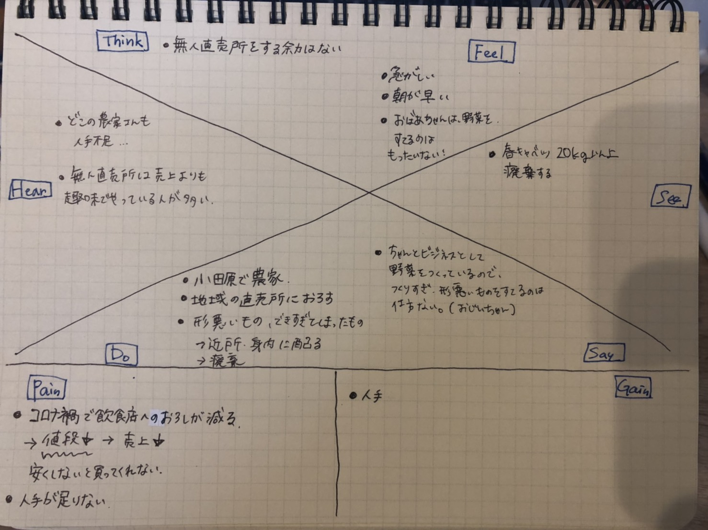

6月進捗状況
[6/2]
●共感マップの作成
友人の祖父母が農家をしており、農家の現状についてお話を伺い共感マップを作成した。

実際、どんな問題があったのか。
・人手不足
・作りすぎ、傷モノ、腐ってしまったり当の理由による廃棄
・重労働
食品ロスはあるがそこまで手が回らない。
また、おじいちゃんの考えで印象的だったのは、野菜を作るのはやっぱり生活をする上でビジネスとしてやっていること。
廃棄は仕方ないと考えている、という考えだ。
企業は廃棄を処理するコストがかかってしまうので、なるべく減らしたいと考えている。また、イメージを良くして会社の利益に繋げたいなど、
資本主義経済に見合った仕組みが成り立つので、食品ロス・廃棄を少なくしようとする。
しかし、農家さんの場合は規模にもよるが、廃棄にそれほどコストがかからないと、日常の仕事の中で組み込まれた業務になってしまう。
結論
意識改革、作業の負担にならない簡単な食品ロス改善に向けたシステム作りが必要なのでは？
おばあちゃんのような、もったいないと感じている人もいる。趣味で無人直売をしている人と繋げて、個人レベルから地域レベルで販売を行うのはどうだろうか。